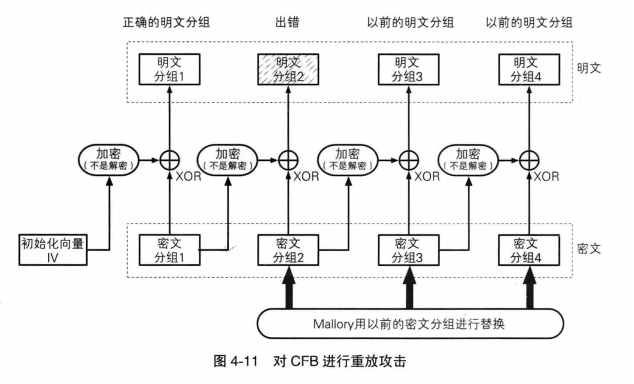
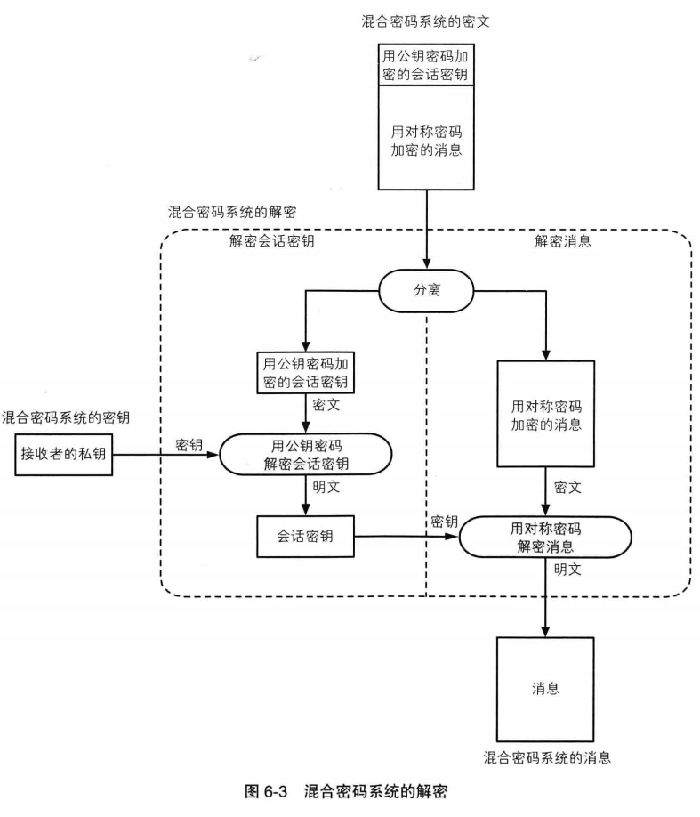

Cryptology
Table of Contents
密码学相关的一些笔记。
<!– more –>
密码学理论
数学
时钟运算
加法
时钟指针向前（顺时针）转 x 刻度会指向几？
new = (old + x) / 12 取余数
减法
时钟指针向后（逆时针）转 x 刻度会指向几？
减法可以通过下面方法转化为加法
如果 0<x<12
new = (old + (12 - x)) / 12 取余数
如果 x>12
x = x/12 取余数
new = (old + (12 - x)) / 12 取余数
乘法
时钟指针向前（顺时针）转 x 刻度 y 次会指向几？
乘法可以通过下面方法转化为加法
new = (x * y)/12 取余数
除法
将"向前（顺时针）转 x 个刻度的操作"重复几次指针会指向 1 呢？
除法可以通过互为倒数的概念转化为乘法(除以一个数等于乘以它的倒数)
1 = (x*y)/12 取余数
以 x=7 为例，求 y 的值

乘方
乘方也称为指数运算，乘方可以转化为乘法的多次重复。
new = (x * x * x * …)/12 取余数
对数
乘方的逆运算称为对数运算。时钟运算中的对数称为离散对数。

密码
密码学概述
密码学术语
| 名称 | 解释 |
|---|---|
| 发送者 | 发送信息的人 |
| 接收者 | 接收信息的人 |
| 窃听者 | 偷看信息的人 |
| 消息 | 被发送的信息 |
| 密码 | 密码是一种能够让消息内容变得无法解读的技术 |
| 明文 | 加密之前的消息 |
| 密文 | 加密之后的消息 |
| 解密 | 正当接收者将密文还原为明文 |
| 密码破译、密码分析 | 接收者以外的其他人试图将密文还原为明文 |
| 破译者 | 进行破译的人 |
| 加密算法 | 从明文生成密文的步骤，即加密的步骤 |
| 解密算法 | 解密的步骤 |
| 密码算法 | 加密、解密的算法合在一起统称为密码算法 |
| 密钥 | 密钥是一种参数，它是在明文转换为密文或将密文转换为明文的算法中会作为输入的参数 |
| 对称密码 | 在加密和解密时使用同一密钥的方式 |
| 公钥密码 | 在加密和解密时使用不同密钥的方式，也称为非对称密码 |
| 混合密码系统 | 将对称密码和公钥密码结合起来的密码方式 |
| 单向散列函数 | 把任意长的输入消息串变化成固定长的输出串且由输出串难以得到输入串的一种函数。一种保证完整性的密码技术 |
| 散列值 | 用单向散列函数计算出来的数值 |
| 消息认证码 | 一种能够保证完整性和提供认证的密码技术 |
| 数字签名 | 能够防止伪装、篡改和否认等威胁的技术 |
| 伪随机数生成器 | 一种能够模拟产生随机数列的算法 |
密码与信息安全常识
- 不要使用保密的密码算法
- 使用低强度的密码比不进行任何加密更危险
- 任何密码总有一天都会被破解
- 密码只是信息安全的一部分
历史上的密码
凯撒密码
凯撒密码是通过将明文中所使用的字母表按照一定的字数平移来进行加密的。
例如：所有字母平移 2 位来进行加密。guodong –（加密）–>iwqfqpi. 此处 2 相当于密钥
破解方法
因为密钥空间比较小，只有 26，可以使用暴力破解来破译这种密码.
简单替换密码
将明文中所使用的字母表替换为另一套字母表的密码称为简单替换密码。
破解方法
使用频率分析的密码破译方法可以破解简单替换密码
Enigma
德国纳粹时期，德国国防军采用了 Enigma。
对称密码
基础概念
编码
将现实世界中的东西映射为比特序列的操作称为编码。例如，常见的字符编码有 ASCII UTF8 等编码
XOR 运算
全称为 exclusive or,译作异或运算。
XOR 运算规则如下:
0 XOR 0 = 0
0 XOR 1 = 1
1 XOR 0 = 1
1 XOR 1 = 0
将 0 理解为偶数，将 1 理解为奇数，就可以将 XOR 和一般的加法运算等同起来。
偶数 0 + 偶数 0 = 偶数 0
偶数 0 + 奇数 1 = 奇数 1
奇数 1 + 偶数 0 = 奇数 1
奇数 1 + 奇数 1 = 偶数 0
将一个棋子保持原状（不翻转）看做 0，将一个棋子翻转到另一面看做 1，那么 XOR 运算就相当于将黑白棋的一个棋子进行翻转的操作进行连接
不翻转 0 + 不翻转 0 = 不翻转 0
不翻转 0 + 翻转 1 = 翻转 0
翻转 1 + 不翻转 0 = 翻转 0
翻转 1 + 翻转 1 = 不翻转 0
一次性密码本
一次性密码本是将明文与一串随机的比特序列进行 XOR 运算。
一次性密码本是无法破译的。因为密钥和明文的长度相同，使用暴力破解法会枚举出所有明文长度的可能信息，无法判断真正的明文是哪个。
DES
概述
DES 全称 Data Encryption Standard,1999 年 DES ChallengeIII 中用了 22 小时 15 分破解了 DES 加密的密文。目前已经不再使用该加密算法.
DES 是以 64 比特的明文为一个单位来进行加密的，这个 64 比特的单位称为分组。以分组为单位进行处理的密码算法称为分组密码。
DES 每次只能加密 64 比特的数据，如果要加密的明文比较长，就需要对 DES 加密进行迭代，而迭代的具体方式就称为模式。
DES 的结构（Feistel 网络）
在 Feistel 网络中，加密的各个步骤称为轮，整个加密过程就是进行若干次轮的循环。DES 是一种 16 轮循环的 Feistel 网络。
- Feistel 的加密

一轮的具体计算步骤：
- 将输入的数据等分为左右两部分
- 将输入的右侧直接发送到输出的右侧
- 将输入的右侧发送到轮函数
- 轮函数根据右侧数据和子密钥，计算初一串看上去是随机的比特序列
- 将上一步得到的比特序列与左侧的数据进行 XOR 运算，并将结果作为加密后的左侧
中间的“子密钥”指的是本轮加密所使用的密钥。在 Feistel 网络中，每一轮都需要使用不同的子密钥。由于子密钥只在一轮中使用，它只是一个局部密钥，因此才称为子密钥。

在一轮运算中，“右侧”根本没有被加密，因此需要用不同的子密钥对一轮的处理重复若干次，并在每两轮处理之间将左侧和右侧数据对调。
- 将输入的数据等分为左右两部分
- Feistel 的解密
- Feistel 网络的性质
- Feistel 网络的轮数可以任意增加
- 加密时无论使用任何函数作为轮函数都可以正确解密
- 加密和解密可以用完全相同的结构来实现
- Feistel 网络的轮数可以任意增加
三重 DES
概述
三重 DES 是为了增加 DES 的强度，将 DES 重复 3 次所得到的一种密码算法。
3DES 的机制

3DES 之所以设计为 加密->解密->加密 的过程是为了兼容普通的 DES。


3DES 目前还被银行等机构使用，但其处理速度不高。
AES
概述
AES (Advanced Encrytion Standard)是取代其前任标准 DES 而成为新标准的一种对称密码算法。
Rijndael
Rijndael 算法在 2000 年被选为新一代标准密码算法——AES。Rijndael 的分组长度为 128 比特，密钥长度可以以 32 比特为单位在 128 比特到 256 比特的范围内进行选择（在 AES 的规格中，密钥长度只有 128,193,256 比特三种）。
它也是由多个轮构成的，其使用了 SPN 结构。


分组密码的模式
基础概念
密码算法可以分为分组密码和流密码两种。
- 分组密码
每次只能处理特定长度的一块数据的一类密码算法，这里的“一块”就称为分组。一个分组的比特数就称为分组长度。
- 流密码
对数据流进行连续处理的一类密码算法。
- 分组密码的模式
分组密码算法只能加密固定长度的分组，当需要加密的明文长度超过分组密码的分组长度，就需要对分组密码算法进行迭代，以便将一段很长的明文全部加密。而迭代的方法就称为分组密码的模式。
- 分组密码模式的分类
- ECB 模式：Electronic CodeBook mode 电子密码本模式
- CBC 模式：Cipher Block Channing mode 密码分组链接模式
- CFB 模式：Cipher FeedBack mode 密文反馈模式
- OFB 模式：Output FeedBack mode 输出反馈模式
- CTR 模式：CounTeR mode 计数器模式
- ECB 模式：Electronic CodeBook mode 电子密码本模式
- 明文分组
明文分组是指分组密码算法中作为加密对象的明文。明文分组的长度和分组密码算法的分组长度是相等的。
- 密文分组
密文分组是指使用分组密码算法将明文分组加密之后所生成的密文。
ECB 模式
在 ECB 模式中，将明文分组加密之后的结果将直接成为密文分组。
ECB 模式的特点
相同的明文分组会被转换为相同的密文分组。
CBC 模式
在 CBC 模式中，首先将明文分组与前一个密文分组进行 XOR 运算，然后再进行加密

CBC 模式的特点
明文在加密之前回合前一个密文分组进行 XOR 运算，所以相同的明文分组对应的密文也不一样。
有一个密文分组损坏会影响该密文分组以及下一个密文分组的明文，但是下下的密文分组不会受到影响。

如果能够对初始化向量中的任意比特进行反转，则第一个明文分组中相应的比特也会被反转。

CBC 模式也可以被重放攻击
CFB 模式
在 CFB 模式中，前一个密文分组会被送回到密码算法的输入端。所谓反馈，这里指的就是返回输入端的意思。
CFB 模式的特点
CFB 模式中，密码算法的输出相当于一次性密码本中的随机比特序列。密码算法就相当于用来生成密钥流的伪随机生成器，而初始化向量就相当于伪随机数生成器的种子。
CFB 模式可以被重放攻击

OFB 模式
在 OFB 模式中，密码算法的输出会反馈到密码算法的输入中。
OFB 模式的特点
OFB 模式中，XOR 所需要的比特序列（密钥流）可以事先通过密码算法生成，和明文分组无关。
OFB 模式中，如果对密钥流的一个分组进行加密后其结果碰巧和加密前是相同的，那么这一分组之后的密钥流就会变成同一值的不断反复。
CTR 模式
CTR 模式是一种通过将逐次累加的计数器进行加密来生成密钥流的流密码。
CTR 模式的特点
CTR 模式中可以以任意顺序对分组进行加密和解密，因此在加密和解密时需要用到的“计数器”的值可以由 nonce 和分组序号直接计算出来。
CTR 模式的密文分组中由一个比特被反转了，则解密后明文分组中仅由与之对应的比特会被翻转，这一错误不会放大。但是，攻击者也可以利用该特性来反转密文分组的某些比特，来引起明文中相应比特的反转。
CTR 模式避免了 OFB 中加密前后一致导致的问题。
模式选择

公钥密码
密钥配送问题
密钥必须要发送，但又不能发送，这就是对称密码的密钥配送问题。
通过事先共享密钥来解决
需要用一种安全的方式将密钥交给对方。例如，直接将密钥保存在 U 盘中，然后亲手将 U 盘交给对方。
通过密钥分配中心来解决
密钥中心为每次会话生成会话密钥，然后，用参与会话的人的密钥加密会话密钥，将加密后的会话密钥发给参与会话的人。
通过 Diffie-Hellman 密钥交换来解决
根据所交换的信息，双方可以各自生成相同的密钥，而窃听者却无法生成相同的密钥。
通过公钥密码来解决
公钥密码中，密钥分为加密密钥和解密密钥，它们是不同的。发送者用加密密钥对消息进行加密，接收者用解密密钥对密文进行解密。只要拥有加密密钥，任何人都可以进行加密，但是没有解密密钥是无法解密的。
公钥密码
在公钥密码中，加密密钥一般时公开的。因此该密钥被称为公钥。
在公钥密码中，解密密钥是绝对不能公开的，这个密钥只能自己来使用，因此该密钥被称为私钥。
公钥和私钥是一一对应的，一对公钥和私钥统称为密钥对。
公钥密码通讯流程

缺点
公钥密码带来了公钥认证问题，需要判断得到的公钥是否正确合法。
公钥密码的处理速度比对称密码要慢很多.
RSA
RSA 是一种公钥密码算法，RSA 可被用于公钥密码和数字签名。
RSA 加密
RSA 的密文是代表明文的数字的 E 次方求 mod N 的结果。也就是说将明文和自己做 E 次乘法，然后将其结果除以 N 求余数，这个余数就是密文。
E 和 N 的组合就是公钥。(E 表示 Encryption，N 表示 Number)
RSA 解密
RSA 的对表示密文的数字的 D 次方求 mod N 的结果。也就是说将密文和自己做 D 次乘法，然后将其结果除以 N 求余数，这个余数就是明文。
D 和 N 的组合就是私钥。(D 表示 Decryption，N 表示 Number)
生成密钥对
求 E、D、N 这三个数就是生成密钥对。RAS 密钥对的生成步骤如下：
求 N
准备两个很大的质数：p 和 q
N = p * q
求 L（L 是仅在生成密钥对的过程中使用的数）
L 是 p-1 和 q-1 的最小公倍数
L = lcm(p-1, q-1)
求 E
E 和 L 之间存在下列关系：
1< E <L
gcd(E,L) = 1 (E 和 L 的最大公约数为 1 E 和 L 互质,该条件保证一定存在解密时需要使用的数 D)
求 D
D、E、L 之间必须具备下列关系：
1<D<L
E*D mod L = 1
RSA 生成密钥对图解

对 RSA 的攻击
- 密码破译者知道的信息：
- 密文：可以通过窃听来获取
- 数 E 和 N:公钥是公开的信息
- 密文：可以通过窃听来获取
- 密码破译者不知道的信息：
- 明文:需要破译的内容
- 数字 D:私钥中至少 D 是不知道的信息
- 其他：密码破译者不知道生成密钥对时所使用的 p、q 和 L
- 明文:需要破译的内容
通过密文来求明文
密文 = 明文^E mode N
目前还没有发现求离散对数的高效算法，所以通过明文求密文非常困难。
通过暴力破解来找出 D
RSA 中所使用的 p 和 q 的长度都是 512 比特以上，N 的长度为 1024 比特以上。由于 E 和 D 的长度可以和 N 差不多，因此要找出 D，就需要进行 1024 比特以上的暴力破解，这也非常困难。
通过 E 和 N 求出 D
D 和 E 的关系如下：
E x D mod L = 1
L = lcm(p-1, q-1)
N = p * q
中间人攻击

其他公钥密码
EIGamal 方式
EIGamal 方式利用了 mod N 下求离散对数的困难度。
EIGamal 方式的一个缺点是，经过加密的密文长度会变为明文的两倍。
Rabin 方式
Rabin 方式利用了 mod N 下求平方根的困难度。
椭圆曲线密码
椭圆曲线密码的特点是所需密钥长度比 RSA 短。
椭圆曲线密码是通过将椭圆曲线上的特定点进行特殊的乘法运算来实现的，它利用了这种乘法运算的逆运算非常困难这一特性。
混合密码系统
加密
解密

认证
单向散列函数
单向散列函数有一个输入和一个输出，其中输入称为消息，输出称为散列值。单向散列函数可以根据消息的内容计算出散列值，散列值可以被用来检查消息的完整性。
单向散列函数的性质
根据任意长度的消息计算初固定长度的散列值
消息不同散列值也不同
两个不同的消息产生同一个散列值的情况称为碰撞.
难以发现碰撞的性质称为抗碰撞性。
弱抗碰撞性：当给定某条消息的散列值时，单向散列函数必须确保要找到和该条消息具备相同散列值的另外一条消息是非常困难的。
强抗碰撞性：要找到散列值相同的两条不同的消息时非常困难的，这里的散列值可以是任意值。
具备单向性
无法通过散列值反算出消息的内容。
单向散列函数的应用
检测软件是否被篡改
用户下载到软件后，可以自行计算散列值，然后与官方网站上公布的散列值进行对比。
基于口令的加密
基于口令的加密（PBE password based encrytion）的原理是将口令和盐（salt，通过伪随机数生成器产生的随机值）混合后计算其散列值，然后，将这个散列值作为加密的密钥。通过这样的方法能够预防针对口令的字典攻击。
消息认证码
使用单向散列函数可以构造消息认证码。消息认证码是将“发送者和接收者之间的共享密钥”和“信息”进行混合后计算出的散列值。
数字签名
数字签名的处理过程非常耗时，因此一般不会对整个消息内容直接施加数字签名，而是先通过单向散列函数计算出消息的散列值，然后再对这个散列值施加数字签名。
伪随机数生成器
密码技术中所使用的随机数需要具备“事实上不可能根据过去的随机数列预测未来的随机数列”这样的性质。为了保证不可预测性，可以利用单向散列函数的单向性。
一次性口令
一次性口令经常被用于服务器对客户端的合法性认证。在这种方式中，通过使用单向散列函数可以保证口令只在通信链路上传送一次，因此即使窃听者窃取了口令，也无法使用。
单向散列函数的具体实例
MD4 MD5
MD 是消息摘要（Message Digest）的缩写。MD4 和 MD5 目前都已经不安全了。
SHA-1 SHA-256 SHA-384 SHA-512
SHA-1 的强抗碰撞性已于 2005 年被攻破。
RIPEMD-160
RIPEMD-160 是 RIPEMD 的修订版。RIPEMD 的强抗碰撞性已经于 2004 年被攻破。
ASH 与 SHA-3
SHA-3 用于取代 SHA-1。SHA-3 和 AES 一样采用公开竞赛的方式进行标准化。
2012 年 10 月 2 日，期盼已久的 SHA-3 获胜算法终于揭开了她的面纱，她就是 Keccak 算法！Keccak 算法由意法半导体的 Guido Bertoni、Joan Daemen（AES 算法合作者）和 Gilles Van Assche，以及恩智浦半导体的 Michaël Peeters 联合开发。NIST 计算机安全专家 Tim Polk 说，Keccak 的优势在于它与 SHA-2 设计上存在极大差别，适用于 SHA-2 的攻击方法将不能作用于 Keccak。
单向散列函数 SHA-1
填充
对消息进行填充处理，使其长度为 512 比特的整数倍。这里 512 比特称为一个输入分组。
输入 SHA-1 的消息长度应大于 0 比特小于 2^64 比特。
SHA-1 的填充过程如下：
计算 W0-W79
根据输入分组的 512 比特计算出 80 个 32 比特的值（W0-W79）
首先，输入分组的 512 比特分成 32 比特*16 组，并将它们命名为 W0-W15.
然后，剩下的 W16-W79 的计算方法如下。
W16 = （W0 xor W2 xor W8 xor W13） 循环左移 1 比特
Wt = W(t-16) xor W(t-14) xor W(t-8) xor W(t-3) 循环左移 1 比特

分组处理
对输入分组一次进行 80 个步骤的处理，计算 5 个 32 比特的值（A-E）作为 SHA-1 的内部状态。对所有的分组都要进行这一操作。
160 比特的内部状态是通过名为 ABCDE 的 5 个 32 比特的缓冲区来表示的，80 个步骤所完成的操作，就是将输入分组的 512 比特的数据，与 SHA-1 所保持的 160 比特的内部状态（5 个缓冲区）进行混合。通过上述 80 个步骤的反复执行，SHA-1 就能够将已经过填充的消息全部混入这 160 比特的内部状态中，而 SHA-1 所输出的散列值，就是所有处理结束之后最终的内部状态（160 比特）。

单步处理
分组处理是由 80 个步骤的处理组成的，其中每个步骤都是基于 W0-W79 使内部状态进行复杂变化的处理。
在一个步骤完成后，缓冲区 ABCD 的内容会被分别复制到 BCDE 中（其中 B 要循环左移 30 比特之后再复制），而缓冲区 E 的内容则会与其他缓冲区的内容以及 Wt，Kt 相加之后再被复制到缓冲区 A 中。
由于上述处理要循环 80 个步骤，因此输入分组中 1 个比特的变化，就会影响到散列值中几乎所有的比特，通过这样的方式，我们就能够实现单向散列函数所应具备的性质。

对单向散列函数的攻击
暴力破解
寻找和特定消息具备相同散列值的另一条不同的消息。这是一种试图破解单向散列函数的“弱抗碰撞性”的攻击
生日攻击
寻找散列值相同的两条消息，散列值可以是任意值。这是一种试图破解单向散列函数的“强抗碰撞性”的攻击
单向散列函数无法解决的问题
单向散列函数可以辨别出“篡改”，但无法辨别出“伪装”
消息认证码
什么是消息认证码
消息认证码（message authentication code）是一种确认完整性并进行认证的技术，取三个单词的首字母，简称 MAC。
消息认证码的输入包括任意长度的消息和一个发送者和接收者之间共享的密钥，它可以输出固定长度的数据，这个数据称为 MAC 值。
根据任意长度的消息输出固定长度的数据，这一点和单向散列函数很类似。但是单向散列函数中计算散列值时不需要密钥，而消息认证码中则需要使用发送者和接收者之间共享的密钥。
要计算 MAC 必须持有共享密钥，没有共享密钥的人就无法计算 MAC 值，消息认证码正式利用这一性质来完成认证的。
和单向散列函数的散列值一样，哪怕消息中发生 1 比特的变化，MAC 值也会产生变化，消息认证码正是利用这一性质来确认完整性的。

消息认证码的使用步骤
消息认证码的实现方法
利用单向散列函数可以实现消息认证码
使用分组密码实现
使用 DES，AES 之类的分组密码可以实现消息认证码。具体做法为，将分组密码的密钥作为消息认证码的共享密钥来使用，并使用 CBC 模式将消息全部加密。由于消息认证码中不需要解密，因此将除最后一个分组以外的密文部分全部丢弃，而将最后一个分组作为 MAC 值。由于 CBC 模式的最后一个分组会受到整个消息以及密钥的双重影响，因此可以将它用作消息认证码。
其他实现方法
使用流密码和公钥密码也可以实现消息认证码。
HMAC
HMAC 是一种使用单向散列函数来构造消息认证码的方法，其中 HMAC 的 H 就是 Hash 的意思。HMAC 中所使用的单向散列函数并不仅限于一种，任何高强度的单向散列函数都可以被用于 HMAC。
1 密钥填充
如果密钥比单向散列函数的分组长度要短，就需要在末尾填充 0，直到其长度达到单向散列函数的分组长度为止。
如果密钥比单向散列函数的分组要长，则要用单向散列函数求出密钥的散列值，然后将这个散列值用作 HMAC 的密钥。
2 填充后的密钥与 ipad 的 XOR
将填充后的密钥与被称为 ipad 的比特序列进行 XOR 运算。ipad 是将 00110110 这一比特序列（即 16 进制的 36）不断循环反复直到达到分组长度所形成的比特序列，其中 ipad 的 i 是 inner（内部）的意思。
XOR 运算所得到的值，就是一个和单向散列函数的分组长度相同，且和密钥相关的比特序列。这里我们将这个比特序列称为 ipadkey
3 与消息组合
随后，将 ipadkey 与消息进行组合，也就是将密钥相关的比特序列（ipadkey）附加在消息的开头。
4 计算散列值
将第 3 步的结果输入单向散列函数，并计算初散列值。
5 填充后的密钥与 opad 的 XOR
将填充后的密钥与被称为 opad 的比特序列进行 XOR 运算。opad 是将 01011100 这一比特序列（即 16 进制的 5C）不断循环反复直到达到分组长度所形成的比特序列，其中 opad 的 o 是 outer（外部）的意思。
XOR 运算所得到的值，这里我们将其称为 opadkey
6 将 第 4 步 的散列值拼在 opadkey 后面
7 计算散列值
将第 6 步的结果输入单向散列函数，并计算出散列值。这个散列值就是最终的 MAC 值。
对消息认证码的攻击
重放攻击
将正确的 MAC 值保持下来重复利用，这种攻击方式称为重放攻击。
- 序号
约定每次都对发送的消息赋予一个递增的编号（序号），并且计算 MAC 值时将序号也包含在消息中。这种方法虽然有效，但是对每个通信对象都需要记录最后一个消息的序号。
- 时间戳
约定在消息发送时包含当前的时间，如果收到以前的消息，即便 MAC 值正确也将其当做错误的消息来处理。这种方法需要保证发送者和接收者的时钟必须一致，而且考虑到通信的延迟，必须在时间的判断上留下缓冲，依然还有重放攻击的可能。
- nonce
在通信之前，接收者先向发送者发送一个一次性的随机数，这个随机数一般称为 nonce。发送者在消息中包含这个 nonce 并计算 MAC 值。由于每次通信时 nonce 的值都会发生变化，因此无法进行重放攻击。该方法虽然有效，但通信的数据量会有所增加。
密钥推测攻击
对于消息认证码来说，应保证不能根据 MAC 值推测出通信双方所使用的密钥。HMAC 中就是利用单向散列函数的单向性和抗碰撞性来保证无法根据 MAC 值推测出密钥的。
此外，在生成消息认证码所使用的密钥时，必须使用密码学安全的、高强度的伪随机数生成器。如果密钥是人为选定的，则会增加密钥被推测的风险。
消息认证码无法解决的问题
对第三方证明
防止否认
数字签名
证书
密码学应用
密钥-秘密的精华
随机数-不可预测性的源泉
PGP
SSL/TLS
密码技术与现实社会
密码学实践
实践项目 https://github.com/wolfand11/cryptology
- DES 实现
- AES 实现
下面 flash 详细描述了 AES 加密过程
https://coolshell.cn/wp-content/uploads/2010/10/rijndael_ingles2004.swf - TEA 实现
- RSA 实现
- sha-1 实现